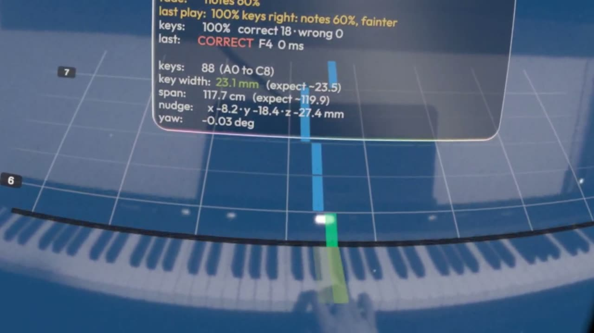
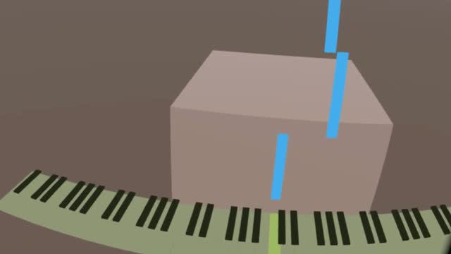
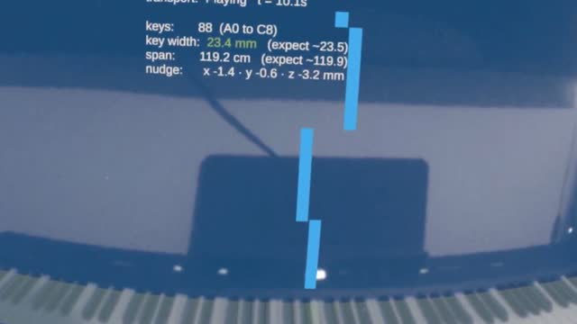
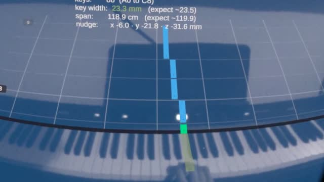
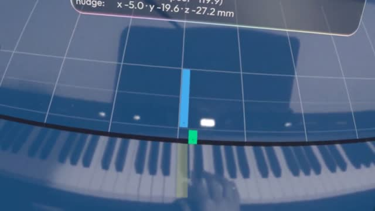

11th grade · Georgia
Ryan Abourjeili
I build mixed-reality apps and interactive websites, usually to teach something or to show how it works. Right now that means a piano trainer for the Meta Quest 3.
Featured project
PianoGlassA mixed-reality piano trainer for Meta Quest 3
You sit at a real piano and the headset shows notes falling onto your real keys. The keyboard plugs into the headset over USB MIDI, so the app knows exactly which key you pressed and when.
That is the point of it. A falling-notes video can't tell you that you played D instead of D♯, or that bar 9 is where you keep falling apart. PianoGlass can, while you play.

- Headset
- Meta Quest 3
- Built with
- Unity 6 · C#
- Started
- Sep 7, 2026
- Commits
- 515
- Test builds
- 12 milestones
- Status
- User study next
-
Wrong-note feedback
Play D instead of D♯ and the key turns red, with the note the song wanted.
-
Timing judgements
Every note is judged and shows how early or late you were, in milliseconds.
PerfectGreatGoodMiss -
Results by bar
After each try, a results card colours one box per bar by how well you played it, then suggests what to work on, like looping bar 9.
-
Practice tools
Slow tempo, metronome, bar loops, one hand at a time, wait mode, and memory fade, which hides the notes as you learn the song.
How it got here

First playable song, on a virtual keyboard.

Calibrated keys that line up with the real piano.

Note highway, coloured by how well each note was hit.

Live score and a metronome while you play.
Science fair
PianoGlass is a team science fair entry with Tushar Chatterjee, in Technology Enhances the Arts. The research question: does an app that listens to what a beginner plays and corrects them in real time help them learn a passage more accurately than a standard falling-notes app? A usability study with five beginner pianists will test it.
Interactive sites
Class projects I turned into websites. Each one is live.
-
Nov 2026
Angle-Pin Launcher Lab
AP Physics 1A 3D simulation of a water balloon slingshot, before and after our group's modification. It tracks forces and energy live and fires 20 shots from each launcher to compare accuracy.
-
Nov 2026
Turning Outward
AP Lang · team of 4A virtual museum on the right to mental health, with a lobby and five galleries. I built the site and curated the gallery on mental health and social media.
-
May 2026
Game Theory and Algebra II
Algebra IIA site that connects game theory to the algebra behind it.
-
Feb 2026
Things Fall Apart
EnglishAn analysis of theme in Chinua Achebe's novel.
-
Feb 2026
The Other Wes Moore
EnglishAn analysis of racism in Wes Moore's book.
AI and Python
From my AI class and my own experiments.
-
Oct 2026
Python Picture Lab
AI class · teaching toolA Python port of the AP CS A Picture Lab, built on plain numpy arrays so students see how an image is stored before they start on machine learning. Includes a pixel-grid inspector notebook and a desktop app.
-
May 2026
YOLOv8 People Counter
Computer visionDetects and counts people in an image, draws a box around each one and overlays the total.
-
Dec 2025
AI Web Summarizer
LLM toolsLoads any webpage from a URL, pulls out the content and writes a short summary with a language model.
Smaller things: a sigmoid neuron from scratch and Snake in Python turtle graphics.